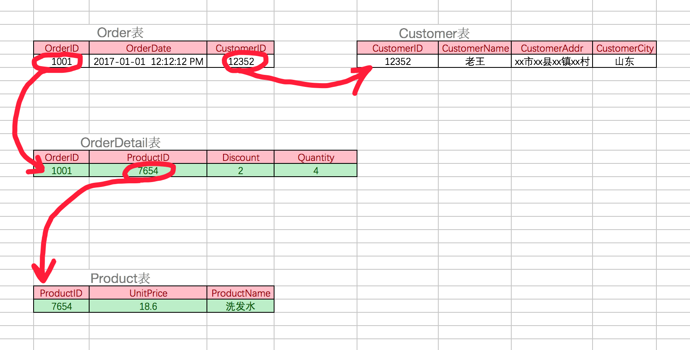

数据库设计 {#数据库设计}
- 关系型数据库建议在E-R模型的基础上，我们需要根据产品经理的设计策划，抽取出来模型与关系，制定出表结构，这是项目开始的第一步
- 在开发中有很多设计数据库的软件，常用的如power designer，db desinger等，这些软件可以直观的看到实体及实体间的关系
- 设计数据库，可能是由专门的数据库设计人员完成，也可能是由开发组成员完成，一般是项目经理带领组员来完成
- 现阶段不需要独立完成数据库设计，但是要注意积累一些这方面的经验
三范式
- 经过研究和对使用中问题的总结，对于设计数据库提出了一些规范，这些规范被称为范式(Normal Form)
- 目前有迹可寻的共有8种范式，一般需要遵守3范式即可
- ◆ 第一范式（1NF）：强调的是列的原子性，即列不能够再分成其他几列。
- ◆ 第二范式（2NF）：首先是 1NF，另外包含两部分内容，一是表必须有一个主键
- ◆ 第三范式（3NF）：首先是 2NF，另外非主键列必须直接依赖于主键，不能存在传递依赖。即不能存在：非主键列 A 依赖于非主键列 B，非主键列 B 依赖于主键的情况。
不遵循1NF

不遵循2NF
不遵循3NF

最终表

E-R模型
- E表示entry，实体，设计实体就像定义一个类一样，指定从哪些方面描述对象，一个实体转换为数据库中的一个表
- R表示relationship，关系，关系描述两个实体之间的对应规则，关系的类型包括包括一对一、一对多、多对多
- 关系也是一种数据，需要通过一个字段存储在表中
- 实体A对实体B为1对1，则在表A或表B中创建一个字段，存储另一个表的主键值

- 实体A对实体B为1对多：在表B中创建一个字段，存储表A的主键值

- 实体A对实体B为多对多：新建一张表C，这个表只有两个字段，一个用于存储A的主键值，一个用于存储B的主键值

- 想一想：举些例子，满足一对一、一对多、多对多的对应关系
逻辑删除
- 对于重要数据，并不希望物理删除，一旦删除，数据无法找回
- 删除方案：设置isDelete的列，类型为bit，表示逻辑删除，默认值为0
- 对于非重要数据，可以进行物理删除
- 数据的重要性，要根据实际开发决定
示例
- 设计两张表：班级表、学生表
- 班级表classes
- id
- name
- isdelete
- 学生表students
- id
- name
- birthday
- gender
- clsid
- isdelete
扩展阅读
- 看看别人家设计的规范
- 58到家数据库30条军规解读